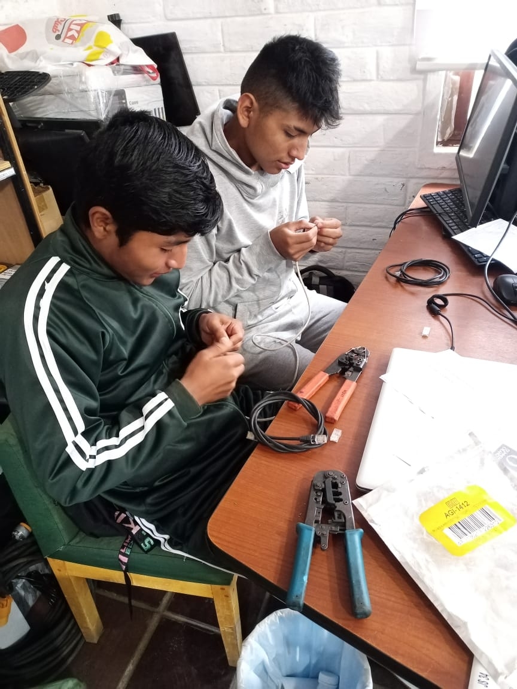
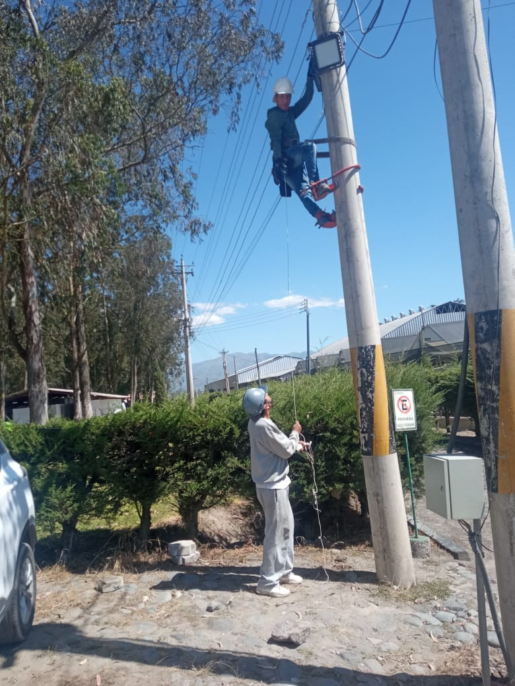

Yo Eduardo Flores estudiante del 3ro técnico asistí a la empresa SAN ISIDRO LABRADOR ,FLORSANI a realizar mis practicas pre profesionales la cual está ubicada en sector de Malchingui , el horario en el que iba asistir era desde las 06:30Am a 15:30pm el horario constaba con hora de desayuno , y hora de almuerzo , el primer día que ingresamos a la empresa nos recibió la Ing. Carolina Rosero la cual nos empezó dando una pequeña charla y con eso empezamos a designar las áreas a mí y a mis compañeros los cuales no nos decidíamos a que área ir estábamos nerviosos todos y sorteamos las áreas dos compañeros se quedaron en el área de estadística , 3 compañeras se quedaron en el área de contabilidad , una compañera se quedó en el área de logística , y los otros dos en el área de almacén , mi persona y mi compañero Yedi Vega nos quedamos en el área de sistemas , la cual mi primer día me presente con el Ing. encargado se llamaba Javier Yanchaguano el cual era Ing. en Sistemas y era el encargado de esa área ese día aprendimos algunas reglas que teniamos que saber sobre la empresa
SEGUNDA SEMANA
La siguinte semana las practias hibamos ratando por todas las areas, con un pasante que se llamaba Cristian lo cual estabamos aprendiendo a como instalar las impresoras y tambien aprendimos sobre una impresora que se lamaba zebra lo cual esa se utilizaba para la impresion de etiquetas, eran algunos pasos que teniamos que hacer para poder instalar tambien aprendimos sobre un servidor que utilizaban en toda las empresas, tambien estabamos hacendo un pequeño mantenimiento a las computadoras de la area de logistica ya que essas se llenaban de mucho polvo en si eso estabamos haciendo la semana dos tambien viendo un poco de los biometricos que se utilizaban en la empresa.
TERCERA Y CUARTA SEMANA
la ultimas semanas en la empresa pasamos con un trabajador que se llamaba Jacobo el era el encargado de las camaras de seguridad , mantenimiento d computadoras , instalaciond e antenas, instalacion de camaras de vigilancia, con Jacobo pasabamos en diferentes areas como es logistica , talento humano , postcosecha , tintes , alamcen ahi haciamos de todo un poco comom es el mantenimiento respectivo a las computadoras , instalacion de venture(aplicacion que se utilizaba en la empresa) tambien estabamos sacando cables y conectando cables , ponchando clabes UTP lo cual en la empresa se utilizaba la serie B , aprendimos a instalar camaras de seguridad , en si fue ena experiencia unica ya que conocimos personas ya con mucha experiencia profecional y podimos conecer un poco de ellos.


MI OPINION
Mi opinion es que la pase muy bien , pude conocer como es la vida profesional tambien pude conocer a personas super cheveres que nos enseñaron un poco de la empresa de lo que se debe hacer y no hacer en un trabajo , tambien pude conocer a los ingenieros de la empresa fue una experiencia unica era un poco estricto pero se que eso nos puede servir adelante que todo lo aprendido en la empresa lo pongamos aprueba tambien cada uno de los ingenieros nos dieron consejos y al final nos felicitaron por ek trabajo que hiciemos en la empresa.